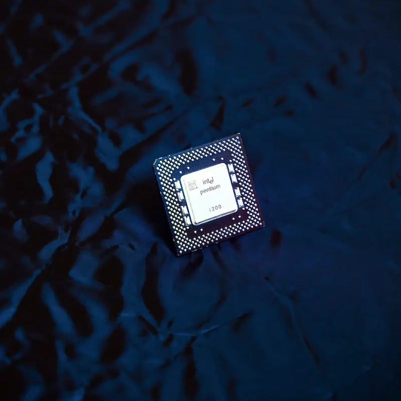
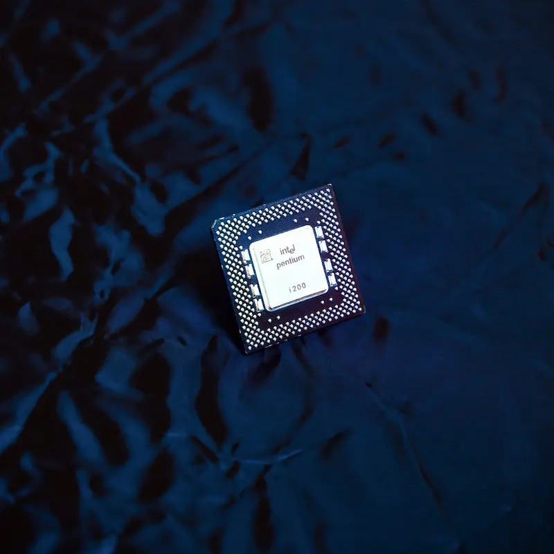
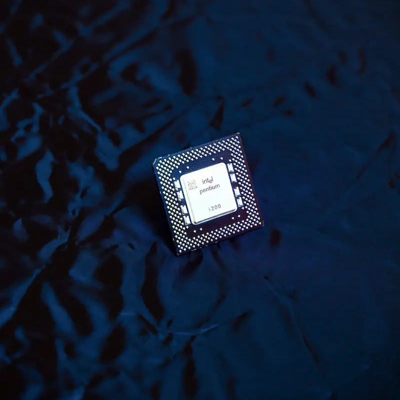

Galleri
Udseende
Det er ret vildt, hvor forskellige, og nogle gange hvor ens, computere ser ud. Her kan du se nogle eksempler på, hvordan computere ser ud. Bemærk forskelle og ligheder på de forskellige billeder.

 



Det er ret vildt, hvor forskellige, og nogle gange hvor ens, computere ser ud. Her kan du se nogle eksempler på, hvordan computere ser ud. Bemærk forskelle og ligheder på de forskellige billeder.
